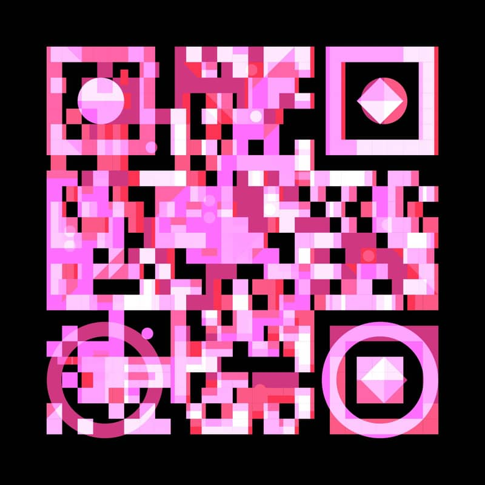
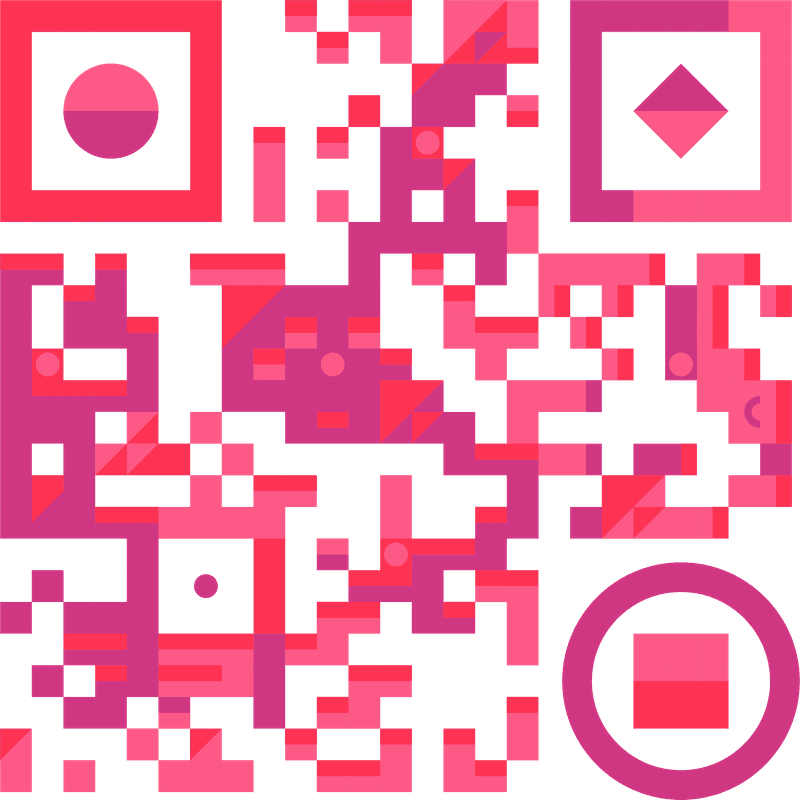
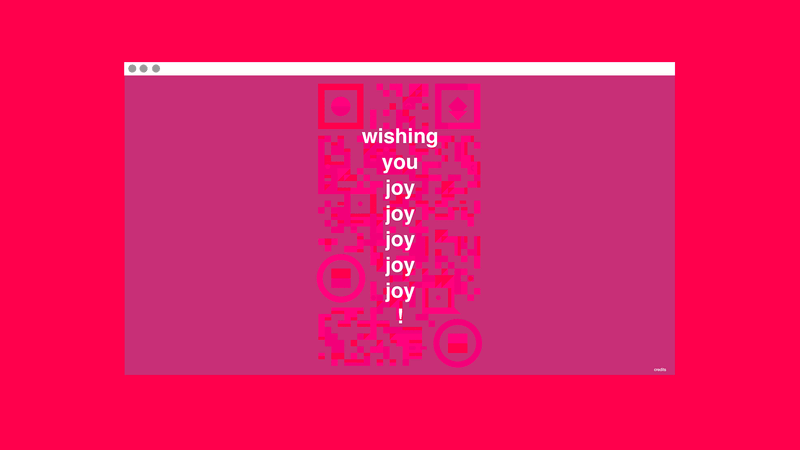
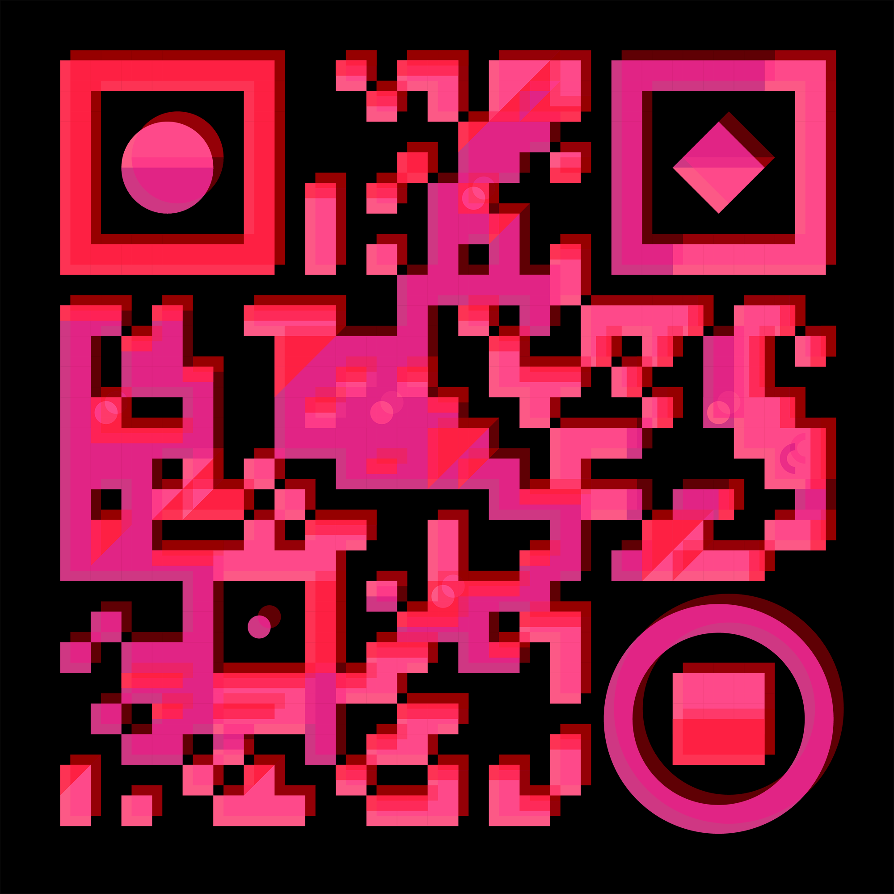

Joy with the AIGA
Interactive holiday wrapping paper blending print and digital experiences
For the 2021 holiday season, AIGA New York commissioned a festive wrapping paper design centered around the theme of "joy." The project presented an opportunity to blend traditional print design with interactive digital experiences through cleverly integrated QR codes.
We secured the memorable domain joyjoyjoyjoyjoy.com and built a series of scannable QR codes that maintained their functionality while being visually transformed into festive holiday motifs. Each QR code linked to a custom-built animation that extended the visual language of the wrapping paper into the digital realm.
As the lead for design, programming, motion, and print, I collaborated closely with the Thackway McCord team under Creative Director Kat McCord to merge tactile and digital elements seamlessly.
✨ Dark mode recommended for optimal viewing of this project.
Functional art with QR codes
The challenge of this project was creating QR codes that could be visually integrated into festive patterns while maintaining their core functionality. We pushed the boundaries of QR code customization, discovering exactly how much visual alteration was possible while ensuring reliable scanning across various devices.
Each code underwent extensive testing to ensure it would function perfectly in real-world scenarios, from different phone models to various lighting conditions, guaranteeing a seamless experience for everyone who received the wrapping paper.
Concept development
Collaborated with the Thackway McCord design team to explore the intersection of functional QR technology with decorative holiday motifs. Developed multiple approaches to create scannable yet visually cohesive patterns that embodied the "joy" theme.
Technical exploration
Tested various QR code modifications to determine the threshold of visual alteration while maintaining functionality. Developed a system that ensured all codes would scan reliably across different devices.
Animation production
Created lightweight Lottie animations that autoplayed immediately after scanning, providing a seamless transition from physical to digital experience. Optimized for mobile performance to ensure quick loading.
Pattern design
Developed repeating patterns using the festive QR codes as the primary motif. Created variations that worked visually while maintaining the interactive functionality of each code in the pattern.
Print production
Prepared specifications for high-quality wrapping paper production. Collaborated with manufacturers to ensure print quality preserved the scannable functionality of the embedded codes.
Digital implementation
Built a responsive landing page at joyjoyjoyjoyjoy.com to host the animations. Created a streamlined user experience that worked instantly after scanning the QR codes from the wrapping paper.
Agency & credits
Agency: Thackway McCord Creative Direction: Kat McCord Role: Design, Programming, Motion, Print QR Link: joyjoyjoyjoyjoy.com
Interactive digital experience
The holiday wrapping paper was just the beginning of the experience. When recipients scanned the QR codes, they were directed to a custom website at joyjoyjoyjoyjoy.com where they were greeted with delightful animations that complemented the physical wrapping paper.
Each animation was crafted to surprise and delight, creating a multi-layered festive experience that merged the tactile joy of unwrapping gifts with the playful nature of digital interactions.